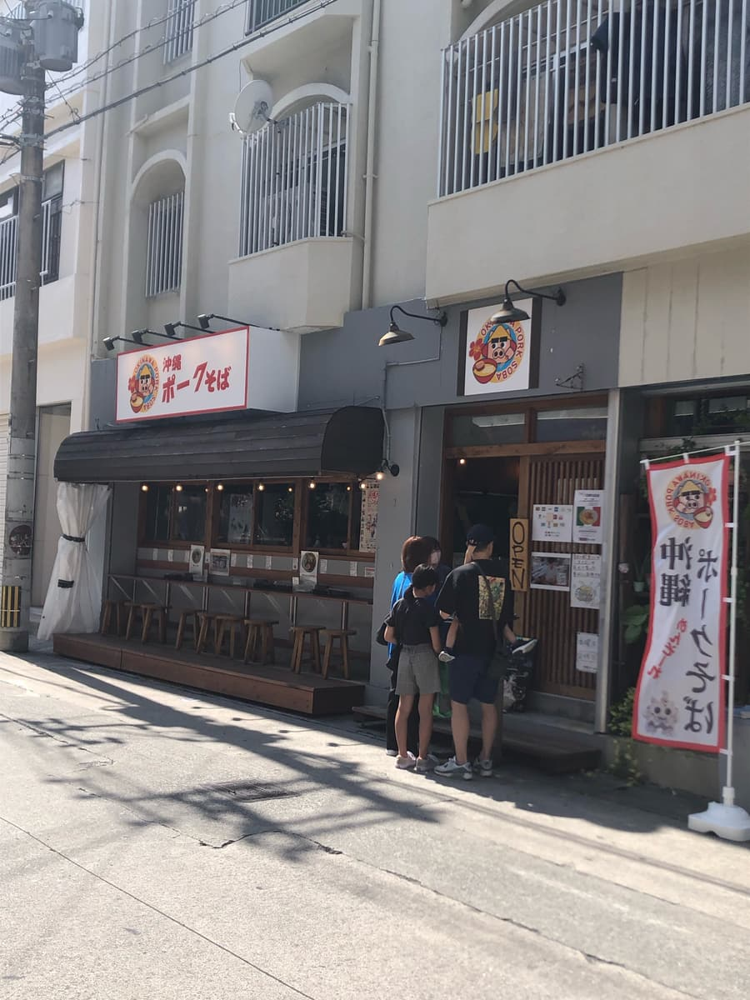
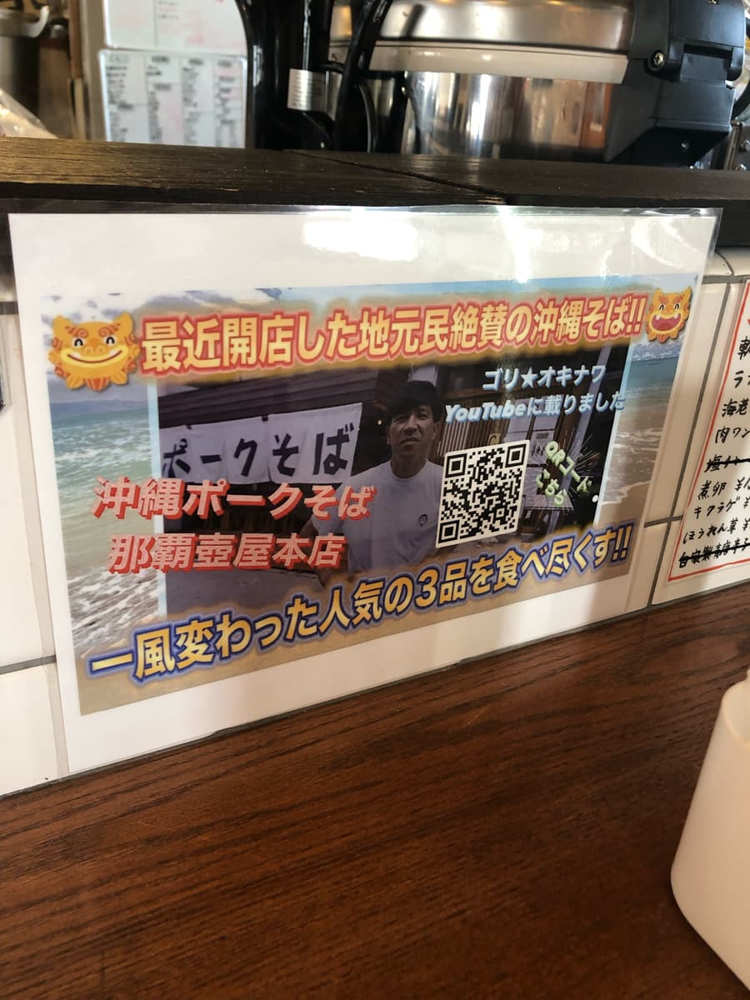
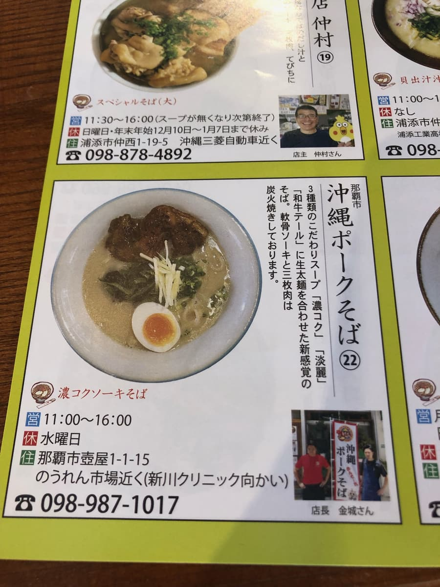
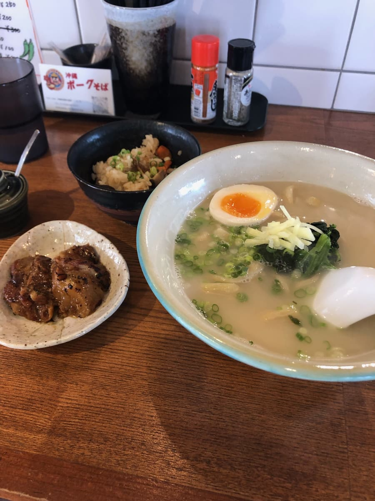
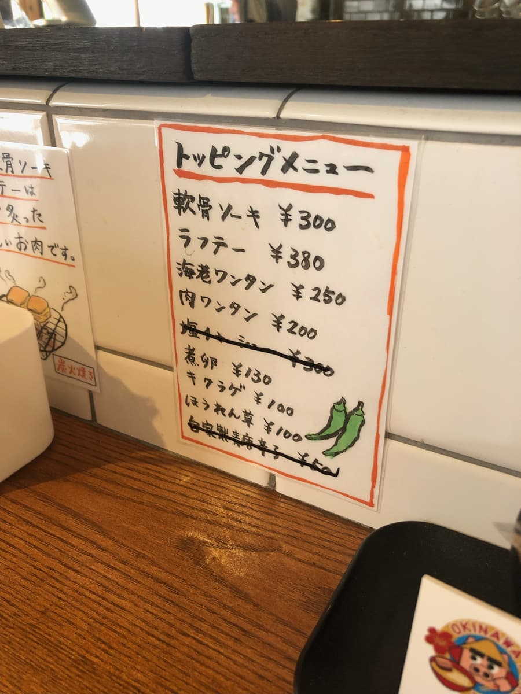
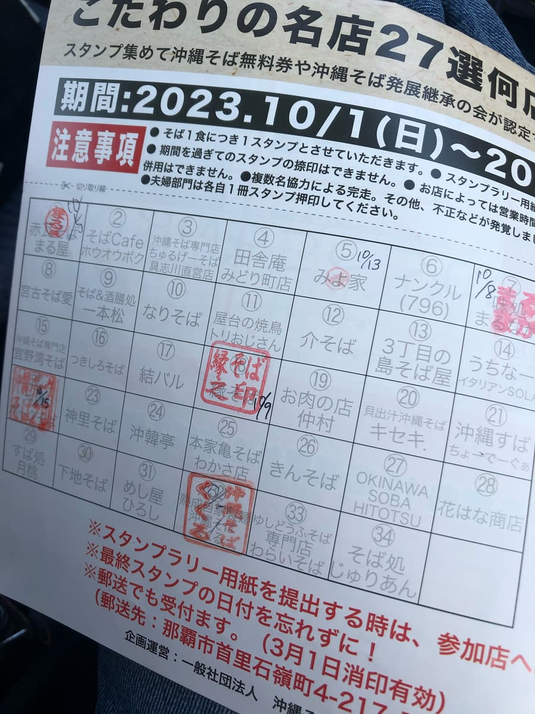

※有消息指出截至2024年5月已經歇業，請留意。如果是真的，這是我覺得好吃的沖繩麵店之一，真可惜(;｡;)
2023年10月吃的。這家店是「第13屆沖繩麵集章活動（2023.10.1〜2024.2.29）」的參加店，是我走訪的34家店中的第6家😊


雖然是中午時段，我推薦暫定第1名的EIBUN依然客人大排長龍，但這裡卻很空。感覺店的知名度還沒有擴散出去。

店內入口設有售票機。因為已經決定要點集章手冊上介紹的麵，所以選了「濃郁排骨麵」。
這台售票機支援手機支付，用「樂天Pay」付款。一邊付款一邊獲得樂天點數，結果等於可以現金回饋，所以果然無現金支付很棒✌ 真希望所有沖繩麵店儘早實現無現金化🙏

生粗麵的煮麵時間似乎要花一點時間，雖然客人很少，還是感覺稍微花了點時間。
聽說可以免費贈送小碗的沖繩炊飯（Jushi），所以我也請他們給了沖繩炊飯（Jushi）（沖繩風炊飯）😊
等了一會兒，濃郁排骨麵送到了ｗｗ 從品名和外觀的湯色想像著相當濃厚的感覺，照慣例喝一口湯。
然而並不是期待中的濃郁味道，而是清爽系的豬骨為底的湯頭(;^ω^) 我擅自想像成像我推薦暫定第4名、阿古豬高湯而我認為暫定第1名的「796（南庫魯）」那樣的濃郁湯頭，所以有點撲了個空(;^ω^)
不過，配料的菠菜、滷蛋（蛋黃半熟）很好吃😋 感覺是有意識地仿照拉麵的配料。另外，另外一盤送來的軟骨排骨是用炭火炙烤的，風味、味道都能感受到炭火，最棒了。配料比我至今吃過的其他店水準高😊
生粗麵也是普通的Q彈口感，好吃。我覺得和配料一樣水準很高。


評分（12分/15分）：我覺得配料和麵水準很高。和EIBUN一樣，那霸市壺屋一帶有好吃的沖繩麵店在互相切磋琢磨呢。湯頭比外觀看起來還清爽，不過加入青辣椒調味料調味變化口味，湯頭的鮮味提升，變得更好吃。請務必也來吃吃看這家店。
麵：★★★★☆（4）
湯頭：★★★✬☆（3.5）
配料：★★★★✬（4.5）